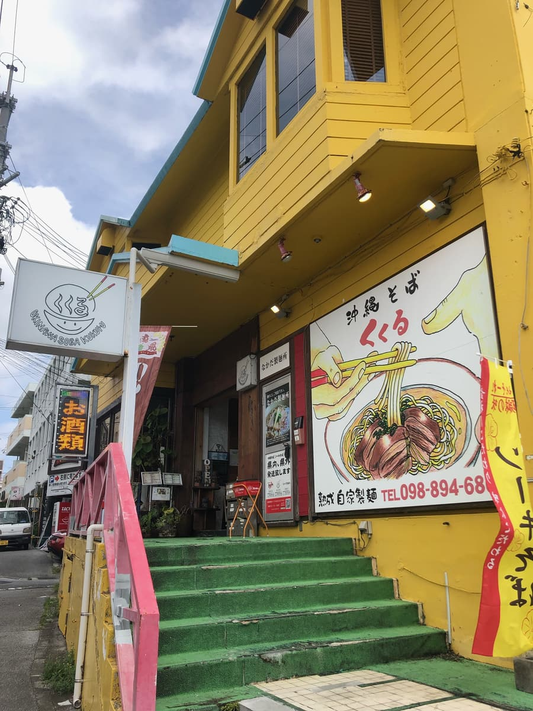
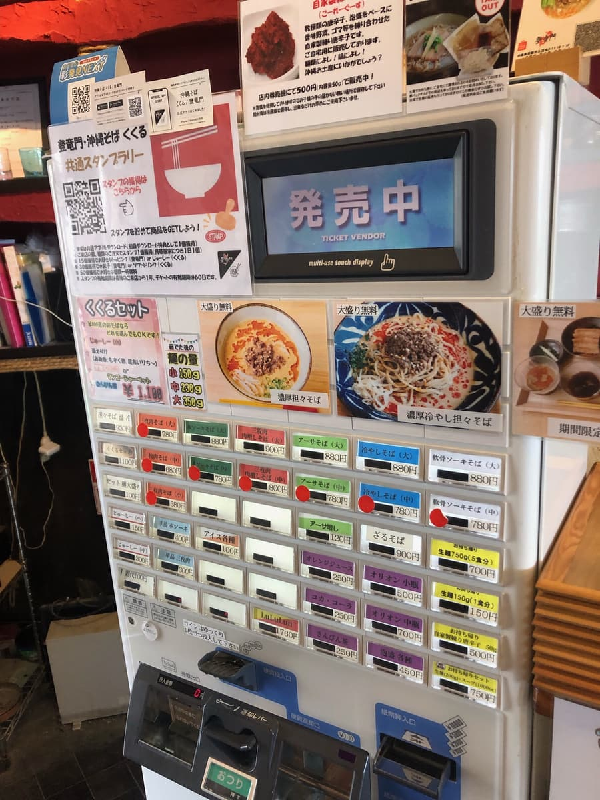
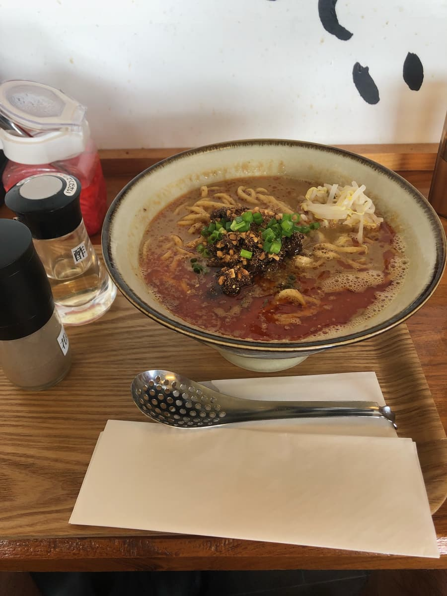
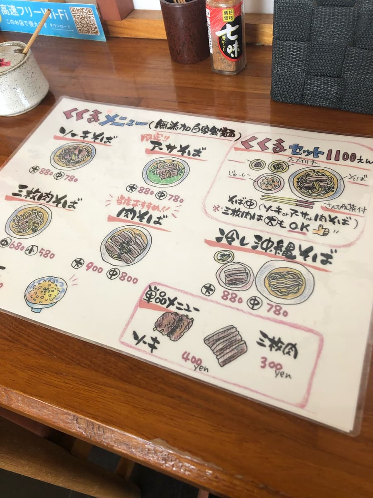
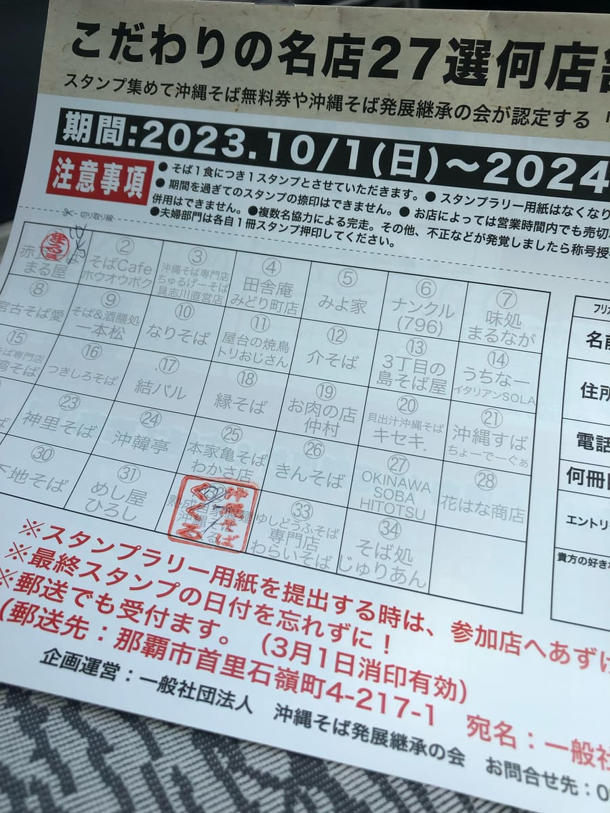
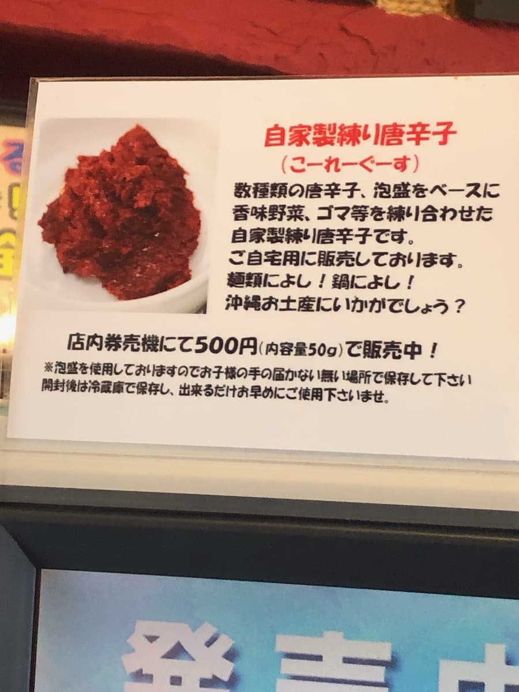

I ate here in October 2023. This shop was a participant in the "13th Okinawa Soba Stamp Rally (2023.10.1–2024.2.29)", and I went as my 2nd of 34 shops 😊

I'd often seen this shop on my way back from the point where I always surf (Itoman City: Suicide Cliff point), and I'd always wanted to eat here someday, and when I learned it was a participant in the "Okinawa Soba Stamp Rally" that I'd found out about a few days earlier, I was finally pushed to go in (;^ω^)
There are Okinawa soba shops all over that I've never been to, so it's hard to decide (;^ω^) But this time I had a goal of prioritizing the 34 shops participating in the limited-time stamp rally, so I went in lol
The stamp rally booklet has an introduction to each shop and a photo of what seems to be their recommended Okinawa soba, so I decided to order that.
For "Kukuru" this time, "Rich Tantan Okinawa Soba" was introduced, so I ordered that. It was featured at the very top of the meal ticket machine too, so it seems to be this shop's top pick 🤗


First, as usual, the broth 😁 It's completely different from the bonito-stock, pork-stock and chicken-stock types of Okinawa soba I usually eat lol It's not super spicy, but it's a little spicy, and you can taste the sesame aroma and flavor too. It feels like ordinary tantanmen 😊 The noodles seem to have seafood powder in them, and you can tell something is kneaded into them. The aged noodles, rested for 48 hours, have a chewy texture and are delicious.
Vinegar and Sichuan pepper flowers were brought out with the Rich Tantan Okinawa Soba, so I added those in the second half.
I thought I'd added quite a lot of vinegar, but since the broth is rich to begin with, I couldn't really tell the change in flavor (;^ω^) You may not be able to experience the flavor change unless you add a lot.



Rating (9.5/15): It was more tantanmen than Okinawa soba 😊 The carefully made homemade noodles had a chewy texture and were delicious. For those who want to eat something different from regular Okinawa soba, how about this Rich Tantan Okinawa Soba? It comes with large noodles and an after-meal ice cream (brown sugar OR mango) sweet too.
Noodles: ★★★✬☆（3.5）
Soup: ★★★☆☆（3）
Toppings: ★★★☆☆（3）